Propensity Score Matching with Three Groups
Jason Bryer
jason.bryer@cuny.edu2025-12-07
Source:vignettes/TriMatch.Rmd
TriMatch.RmdAbstract
The use of propensity score methods (Rosenbaum and Rubin 1983) have become popular for estimating causal inferences in observational studies in medical research (Austin 2008) and in the social sciences (Thoemmes and Kim 2011). In most cases however, the use of propensity score methods have been confined to a single treatment. Several researchers have suggested using propensity score methods with multiple control groups, or to simply perform two separate analyses, one between treatment one and the control and another between treatment two and control. This paper introduces the TriMatch package for R that provides a method for determining matched triplets. Examples from educational and medical contexts will be discussed.Introduction
Consider two treatments, and , and a control, . We estimate propensity scores with three separate logistic regression models where model one predicts with , model two predicts with , and model three predicts with . The triangle plot in Figure @ref(fig:triangleplot) depicts the fitted values (i.e. propensity scores) from the three models on each edge of the triangle. Since each unit has a propensity score in two of the three models, their scores are connected. We can then calculate three distances between propensity scores for each possible matched triplet using the three models. Given those distances, the matched triplets with the smallest standardized distance (i.e. ) are retained. Several methods for determining which matched triplets to retain are provided with the possibility of the researcher to implement their own. The black lines in Figure @ref(fig:triangleplot) represent one matched triplet (i.e. one row in the returned data frame).
Propensity score analysis of two groups typically use dependent
sample t-tests (Austin 2010). The
analogue for matched triplets include repeated measures ANOVA and the
Freidman Rank Sum Test. The TriMatch package provides
utility functions for conducting and visualizing these statistical
tests. Moreover, a set of functions extending PSAgraphics
(Helmreich and Pruzek 2009) for matched
triplets to check covariate balance are provided.
The TriMatch Algorithm
The trips and trimatch functions are used
to estimate the propensity scores and find the best matched triplets,
respectively.
A. Propensity scores are estimated for three models using logistic regression.
B. Match order is determined. The default is to start with the larger
of the two treatments, followed the second treatment, and lastly the
control group. However, the match order is configurable vis-a-vis the
match.order parameter.
C. Three distance matrices are calculated, , , and corresponding to the propensity scores estimated in step @ref(item:ps). That is, is a x matrix where is the standardized distance between and .
D. Distances greater than the caliper, 0.25 by default as recommended by (Rosenbaum and Rubin 1985), are eliminated. The caliper is specified in standard units so 0.25 corresponds to one-quarter of one standard deviation.
E. If partial exact matching is desired, three logical matrices are created with the same dimensions as the distance matrices calculated in step @ref(item:distance). That is, position in the matrix is true if the covariate(s) to match exactly on between unit and match exactly. Distances where exact there are not exact matches are eliminated.
F. For the remaining units, all possible combinations of matched triplets are formed and a total standardized distance is calculated.
The result of the above procedure is the equivalent of caliper
matching in the two group case. That is, all possible matches within a
specified caliper are retained. This can be achieved by specifying
method = NULL parameter to the trimatch
function. Two additional methods are provided to reduce the number of
matched triplets. The maximumTreat method attempts to
reduce the number of duplicate treatment units. This is analogous to
matching without replacement in the two group case. However, treatment 1
units may be matched to two different treatment 2 units if that
treatment 2 unit would otherwise not be matched. The OneToN
method will allow the user to specify exactly how many times each
treatment 1 and treatment 2 may be reused.
Effects of Tutoring on Course Grades
In the first example we will utilize observational data obtained to evaluate the effectiveness of tutoring services on course grades. Treatment students consisted of those students who used tutoring services while enrolled in a online writing course between 2008 and 2011. A comparison group was identified as students enrolled in a course section with a student who used tutoring services. The treatment group was then divided into two based upon the number of times they utilized tutoring services. “Novice” users are those who used the services once and “regular” users are those who used services two or more times. Covariates available for estimating propensity scores are gender, ethnicity, military status, English second language learner, educational level for mother and father, age at the beginning of the course, employment level at college enrollment, income level at college enrollment, number of transfer credits, and GPA at the start of the course.
names(tutoring)
#> [1] "treat" "Course" "Grade" "Gender" "Ethnicity"
#> [6] "Military" "ESL" "EdMother" "EdFather" "Age"
#> [11] "Employment" "Income" "Transfer" "GPA" "GradeCode"
#> [16] "Level" "ID"The courses represented here are structured such that the variation from section-to-section is minimal. However, the differences between courses is substantial and therefore we will utilize partial exact matching so that all matched students will have taken the same course.
table(tutoring$treat, tutoring$Course, useNA="ifany")
#>
#> ENG*101 ENG*201 HSC*310
#> Control 349 518 51
#> Treat1 22 36 76
#> Treat2 31 32 27The first step of analysis is to estimate the propensity scores. The
trips function will estimate three propensity score models,
,
,
and
as described above. Note that when specifying the formula the dependent
variable, or treatment indicator, is not included. The
trips function will replace the dependent variable as it
estimates the three logistic regression models.
formu <- ~ Gender + Ethnicity + Military + ESL + EdMother + EdFather +
Age + Employment + Income + Transfer + GPA
tutoring.tpsa <- trips(tutoring, tutoring$treat, formu)Figure @ref(fig:triangleplot) is a triangle plot that depicts the propensity scores from the three models. Since each student has two propensity scores, their scores are connected with a line. The black line in Figure @ref(fig:triangleplot) represents one matched triplet estimated below.
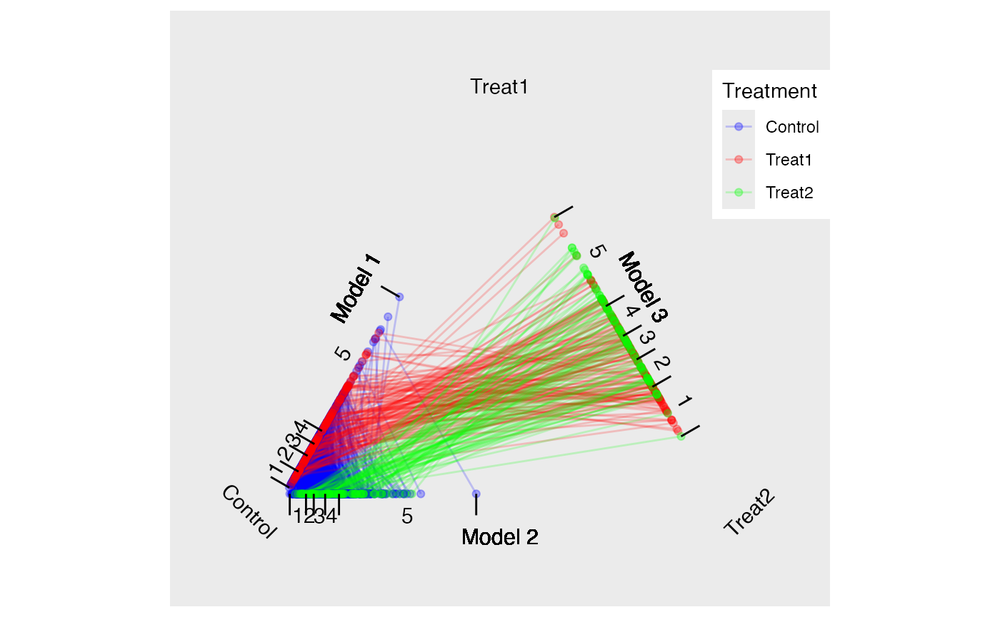
The default for trimatch is to use the
maximumTreat method retaining each treatment unit once with
treatment one units matched more than once only if the corresponding
treatment two unit would not be matched otherwise.
Setting the method parameter to NULL will
result in caliper matching. All matched triplets within the specified
caliper are retained. This will result in the largest number of matched
triplets.
Lastly, we will use the OneToN method to retain a
2-to-1-to-n and 3-to-2-n matches.
tutoring.matched.2to1 <- trimatch(tutoring.tpsa,
exact=tutoring[,c("Course")], method=OneToN, M1=2, M2=1)
tutoring.matched.3to2 <- trimatch(tutoring.tpsa,
exact=tutoring[,c("Course")],
method=OneToN, M1=3, M2=2)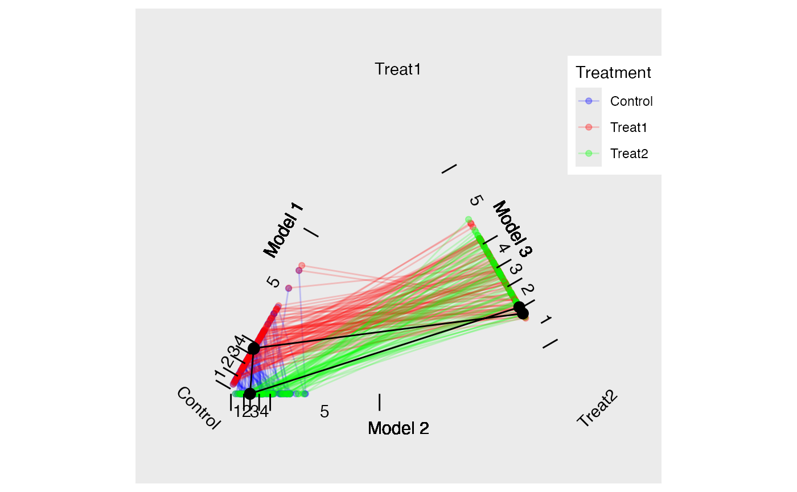
Traingle Plot
Examining Unmatched Students
The different methods for retaining matched triplets address the
issue of overrepresentation of treatment units. In this example there
four times as many control units as treatment units (the ratio is larger
when considering the treatments separately). These methods fall on a
spectrum where each treatment unit is used minimally
(maximumTreat method) or all units are used (caliper
matching). (Rosenbaum 2012) suggests
testing hypothesis more than once and it is our general recommendation
to utilize multiple methods. Functions to help present and compare the
results from multiple methods are provided and discussed below.
The unmatched function will return the rows of students
who were not matched. The summary function will provide
information about how many students within each group were not matched.
As shown below, the caliper matching will match the most students. In
this particular example, in fact, the only substantial difference in the
unmatched students is with the control group. All methods fail to match
37 treatment one students. This is due to the fact that there is not
another student within the specified caliper that match exactly on the
course.
summary(unmatched(tutoring.matched))
#> 892 (78.1%) of 1142 total data points were not matched.
#> Unmatched by treatment:
#> Control Treat1 Treat2
#> 834 (90.8%) 39 (29.1%) 19 (21.1%)summary(unmatched(tutoring.matched.caliper))
#> 638 (55.9%) of 1142 total data points were not matched.
#> Unmatched by treatment:
#> Control Treat1 Treat2
#> 580 (63.2%) 39 (29.1%) 19 (21.1%)Checking Balance
The eventual strength of propensity score methods is dependent on how well balance is achieved. (Helmreich and Pruzek 2009) introduced graphical approaches to evaluating balance. We provide functions that extend that framework to matching of three groups. Figure @ref(fig:multibalance) is a multiple covariate balance plot that plots the absolute effect size of each covariate before and after adjustment. In this example, the figure suggests that reasonable balance has been achieved across all covariates and across all three models since effect sizes are smaller than the unadjusted in most cases and relatively small.
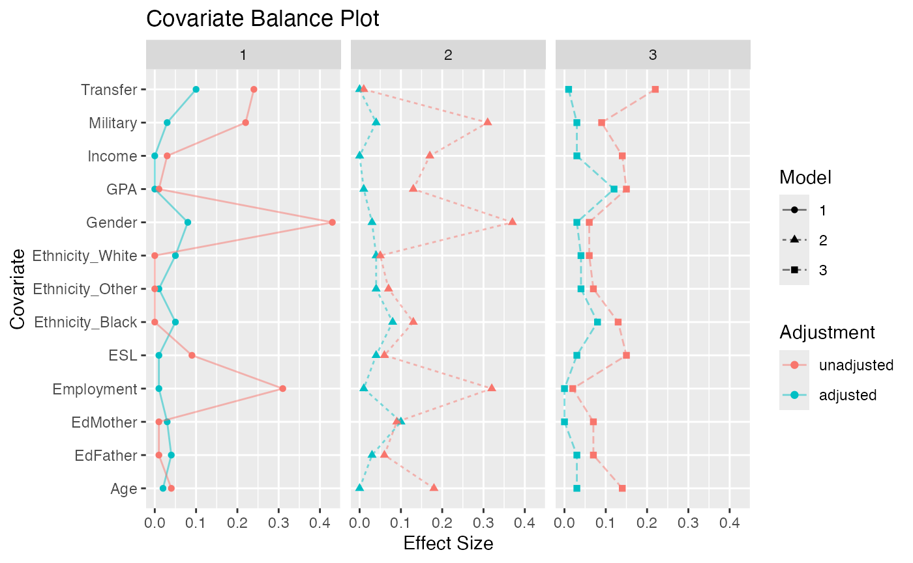
Multiple Covariate Balance Plot of Absolute Standardized Effect Sizes Before and After Propensity Score Adjustment
Figure @ref(fig:balance) is the results of the
balance.plot function. This function will provide a bar
chart for categorical covariates and box plots for quantitative
covariates, individually or in a grid.
bplots <- balance.plot(tutoring.matched, tutoring[,all.vars(formu)],
legend.position="none", x.axis.labels=c("C","T1","T1"), x.axis.angle=0)
print(plot(bplots, cols=3, byrow=FALSE))/Projects/TriMatch/docs/articles/TriMatch_files/figure-html/balance-1.png)
Covariate Balance Plots
#> NULLPhase II: Estimating Effects of Tutoring on Course Grades
In phase two of propensity score analysis we wish to compare our
outcome of interest, course grade in this example, across the matches. A
custom merge function is provided to merge an outcome from
the original data frame to the results of trimatch. This
merge function will add three columns with the outcome for each of the
three groups.
matched.out <- merge(tutoring.matched, tutoring$Grade)
names(matched.out)
#> [1] "Treat1" "Treat2" "Control" "D.m3" "D.m2"
#> [6] "D.m1" "Dtotal" "Treat1.out" "Treat2.out" "Control.out"
head(matched.out)
#> Treat1 Treat2 Control D.m3 D.m2 D.m1 Dtotal Treat1.out Treat2.out
#> 1 368 39 331 0.0071 0.0018 1.0e-02 0.019 4 4
#> 2 158 279 365 0.0034 0.0095 1.1e-02 0.024 4 4
#> 3 899 209 100 0.0019 0.0136 9.2e-03 0.025 4 3
#> 4 692 596 1055 0.0238 0.0103 1.9e-03 0.036 4 3
#> 5 616 209 208 0.0202 0.0166 3.2e-05 0.037 4 3
#> 6 28 852 154 0.0075 0.0142 1.8e-02 0.039 4 4
#> Control.out
#> 1 0
#> 2 4
#> 3 4
#> 4 4
#> 5 0
#> 6 2Although the merge function is convenient for conducting
your own analysis, the summary function will perform the
most common analyses including Friedman Rank Sum test and repeated
measures ANOVA. If either of those tests produce a p value less
than the specified threshold (0.05 by default), then the
summary function will also perform and return Wilcoxon
signed rank test and three separate dependent sample t-tests
see (Austin 2010) for discussion of
dependent versus independent t-tests.
s1 <- summary(tutoring.matched, tutoring$Grade)
names(s1)
#> [1] "PercentMatched" "friedman.test" "rmanova"
#> [4] "pairwise.wilcox.test" "t.tests"
s1$friedman.test
#>
#> Friedman rank sum test
#>
#> data: Outcome and Treatment and ID
#> Friedman chi-squared = 28, df = 2, p-value = 9e-07
s1$t.tests
#> Treatments t df p.value sig mean.diff ci.min ci.max
#> 1 Treat1.out-Treat2.out -2.8 117 6.1e-03 ** -0.32 -0.55 -0.094
#> 2 Treat1.out-Control.out 3.8 117 2.2e-04 *** 0.70 0.34 1.068
#> 3 Treat2.out-Control.out 6.9 117 2.5e-10 *** 1.03 0.73 1.319The print method will accept multiple object returned by
summary so to combine them into a single table output. Note
that each parameter must be named and that name will be used to identify
the row containing those results.
s2 <- summary(tutoring.matched.caliper, tutoring$Grade)
s3 <- summary(tutoring.matched.2to1, tutoring$Grade)
s4 <- summary(tutoring.matched.3to2, tutoring$Grade)
print("Max Treat"=s1, "Caliper"=s2, "2-to-1"=s3, "3-to-2"=s4)
#> Method Friedman.chi2 Friedman.p rmANOVA.F rmANOVA.p
#> 1 Max Treat 28 8.7e-07 *** 24 3.8e-10 ***
#> 2 Caliper 113 2.9e-25 *** 108 2.4e-45 ***
#> 3 2-to-1 19 7.7e-05 *** 16 1.1e-06 ***
#> 4 3-to-2 32 9.8e-08 *** 25 1.5e-10 ***boxdiff.plot(tutoring.matched, tutoring$Grade,
ordering=c("Treat2","Treat1","Control")) +
ggtitle("Maximum Treatment Matching")
boxdiff.plot(tutoring.matched.caliper, tutoring$Grade,
ordering=c("Treat2","Treat1","Control")) +
ggtitle("Caliper Matching")
boxdiff.plot(tutoring.matched.2to1, tutoring$Grade,
ordering=c("Treat2","Treat1","Control")) +
ggtitle("2-to-1-to-n Matching")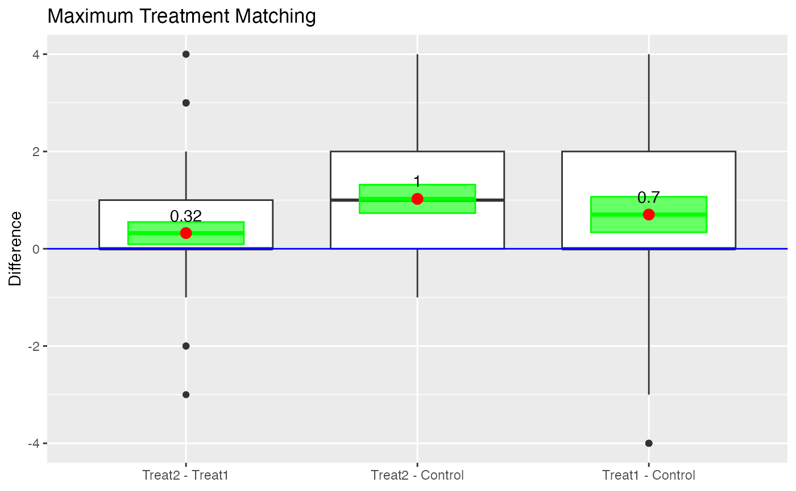
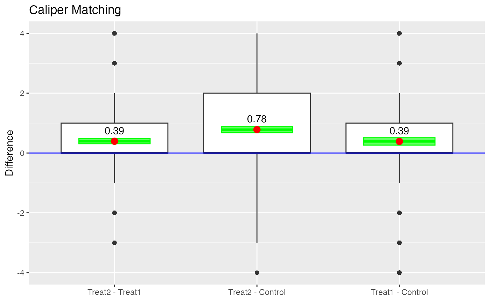
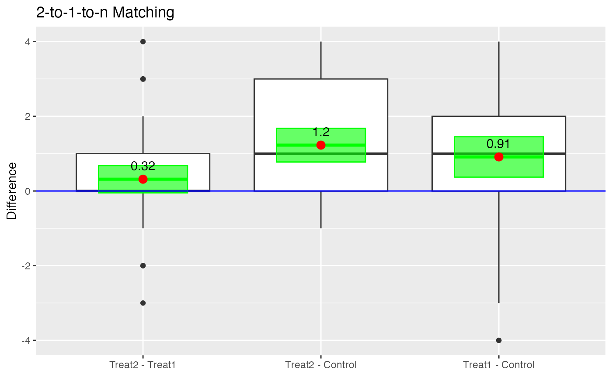
Boxplot of Differences
Another useful visualization for presenting the results is the Loess
plot. In Figure @ref(fig:loess) we plot the propensity scores on the
x-axis and the outcome (grade in this example) on the
y-axis. A Loess regression line is then overlaid.1 Since there are three
propensity score scales, the plot.loess3 function will use
the propensity scores from the model predicting treatment one from
treatment two. Propensity scores for the control group are then imputed
by taking the mean of the propensity scores of the two treatment units
that control was matched to. It should be noted that if a control unit
is matched to two different sets of treatment units, then that control
unit will have two propensity scores. Which propensity score scale is
utilized can be explicitly specified using the model
parameter.
loess3.plot(tutoring.matched.caliper, tutoring$Grade, ylab="Grade",
points.alpha=.1, method="loess")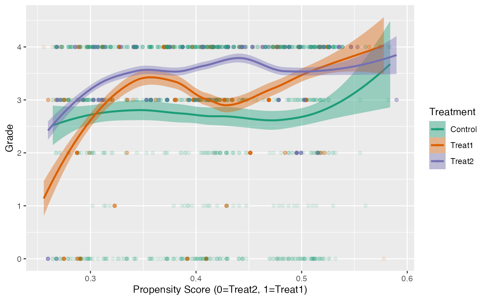
Loess Plot for Caliper Matching
Effects of Smoking on Medical Expenditures
In this example2 we will utilize the National Medical Expenditure Study (National Center For Health Services Research 1987) to estimate the effects of smoking on medical expenditures. This dataset was first used by (Johnson et al. 2003) to estimate the effects of smoking on diseases, and then the effect of diseases on medical expenditures. (Imai and Dyk 2004) developed an a method to generalize the propensity score, called a p-score, to directly estimate the effects of smoking on medical expenditures. More specifically, they defined a quantitative treatment variable, pack year, defined as:
Our approach is designed to match three separate groups and not a continuous treatment. We will address two research questions: (1) What are the effects of smoking status (i.e. never smoked, former smoker, and current smoker) on medical expenditures? and (2) What are the effects of lifetime smoking on medical expenditures? Figure @ref(fig:packyearsAndTotalExp) represent the relationship between these two different treatments3. This figure reveals several, perhaps counterintuitive, facts. First, the unadjusted total medical expenditures for former smokers is higher than current smokers. Secondly, the distribution of overlap substantial between former and current smokers. To dichotomize the pack year smoking variable, we will split on the median of pack year, labeled moderate smokers (i.e. ) and heavy smokers (i.e. ).
data(nmes)
nmes <- subset(nmes, select = c(packyears, smoke, LASTAGE, MALE, RACE3, beltuse, educate, marital, SREGION, POVSTALB, HSQACCWT, TOTALEXP))Both (Johnson et al. 2003) and (Imai and Dyk 2004) conducted a complete-case analysis and Johnson et al. reported that multiple imputation did not substantially affect their results.
Since many participants had zero medical expenditures, we will add
one to the total expenditures before log transforming the variable. We
will then calculate the median of pack year and create a new treatment
variable, smoke2, for moderate and heavy smokers with
non-smokers.
nmes$smoke <- factor(nmes$smoke, levels=c(0,1,2), labels=c("Never","Smoker","Former"))
nmes$LogTotalExp <- log(nmes$TOTALEXP + 1)
(medPY <- median(nmes[nmes$smoke != "Never",]$packyears))
#> [1] 17
table(nmes$smoke, nmes$packyears > medPY)
#>
#> FALSE TRUE
#> Never 9802 0
#> Smoker 2571 2901
#> Former 2209 1869
nmes$smoke2 <- ifelse(nmes$smoke == "Never", "Never",
ifelse(nmes$packyears > 17, "Heavy", "Moderate"))
table(nmes$smoke, nmes$smoke2, useNA="ifany")
#>
#> Heavy Moderate Never
#> Never 0 0 9802
#> Smoker 2901 2571 0
#> Former 1869 2209 0ggplot(nmes[nmes$smoke != "Never",], aes(x=log(packyears+1), color=smoke, fill=smoke)) +
geom_density(alpha=.1) +
theme(legend.position="none", plot.margin=rep(unit(0, "cm"), 4)) +
xlab("") + ylab("Density")
ggplot(nmes[nmes$smoke != "Never",], aes(x=log(packyears+1), y=LogTotalExp, color=smoke, fill=smoke)) +
geom_point(alpha=.2) +
geom_smooth(method="loess", formula = y ~ x) +
scale_color_hue("") + scale_fill_hue("") +
theme(legend.position=c(.9,1), plot.margin=rep(unit(0, "cm"), 4)) +
xlab("log(Pack Year)") + ylab("log(Total Expenditures)")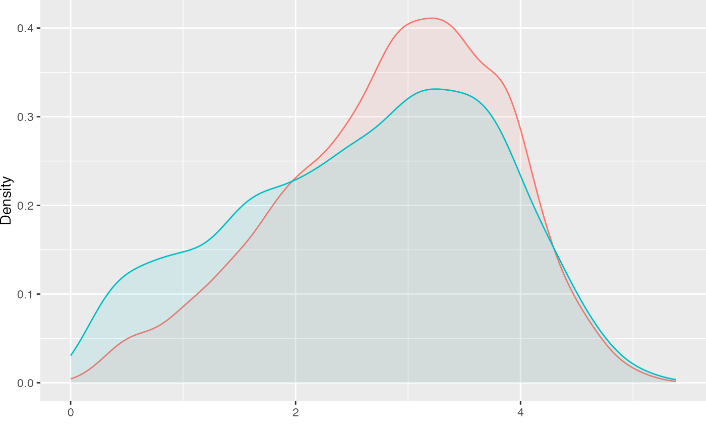
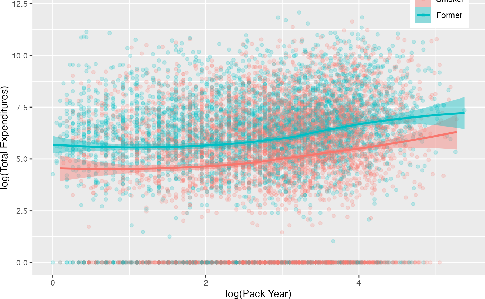
Relationship Between Pack Year and Total Expenditures by Current Smoking Status
Imai and van Dyk observed that there appeared to be a relationship between age and medical expenditures. We will create a new categorical age variable using quintiles to use for partial exact matching. This serves two purposes, first it ensures balance on this critical covariate (note that we will also exactly match on gender and ethnicity) and two, decrease the search space for matched triplets therefore increasing the efficiency of the matching algorithm. The possible disadvantage of exact matching is that too many treated units will not be matched. We will examine unmatched treatment units below.
nmes$LastAge5 <- cut(nmes$LASTAGE,
breaks=quantile(nmes$LASTAGE, probs=seq(0,1,1/5)),
include.lowest=TRUE, orderd_result=TRUE)Define our model to estimate the propensity scores.
Estimate propensity scores for our two different treatments. Figure @ref(fig:nmestriangleplot) provides triangle plots for both models.
p.smoke <- plot(tpsa.smoke, sample=c(.05), edge.alpha=.1) + ggtitle("Treatment Variable: Current Smoking Status")
p.packyears <- plot(tpsa.packyears, sample=c(.05), edge.alpha=.1) + ggtitle("Treatment Variable: Lifetime Smoking Frequency")
p.smoke
p.packyears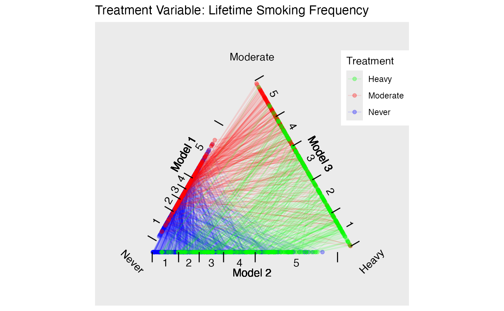
Triangle Plots for NMES
Create two sets of matched triplets for our two treatments.
tmatch.smoke <- trimatch(tpsa.smoke,
exact=nmes[,c("LastAge5","MALE","RACE3")])
tmatch.packyears <- trimatch(tpsa.packyears,
exact=nmes[,c("LastAge5","MALE","RACE3")])The following summary of the unmatched rows show that more than 96% of the treatment units were matched in both models.
summary(unmatched(tmatch.smoke))
#> 7049 (36.4%) of 19352 total data points were not matched.
#> Unmatched by treatment:
#> Never Smoker Former
#> 6805 (69.4%) 142 (2.6%) 102 (2.5%)
summary(unmatched(tmatch.packyears))
#> 7532 (38.9%) of 19352 total data points were not matched.
#> Unmatched by treatment:
#> Heavy Moderate Never
#> 181 (3.79%) 323 (6.76%) 7028 (71.7%)Figure @ref(fig:nmesbalance) is a multiple covariate balance plot for
the two treatments. It shows that the absolute effect sizes after
adjustment is better for all covariates. The demo included in the
TriMatch package provides functions to create individual
balance plots for each covaraite.
p.smoke <- multibalance.plot(tpsa.smoke) + ggtitle("Treatment Variable: Current Smoking Status")
p.packyears <- multibalance.plot(tpsa.packyears) + ggtitle("Treatment Variable: Lifetime Smoking Frequency")
p.smoke
p.packyears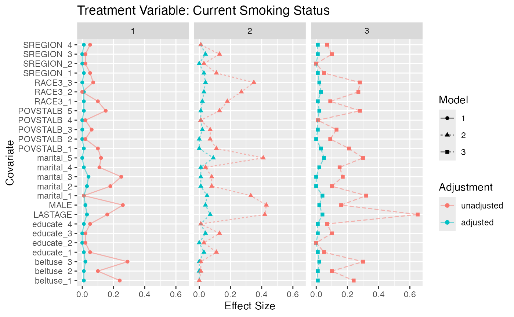
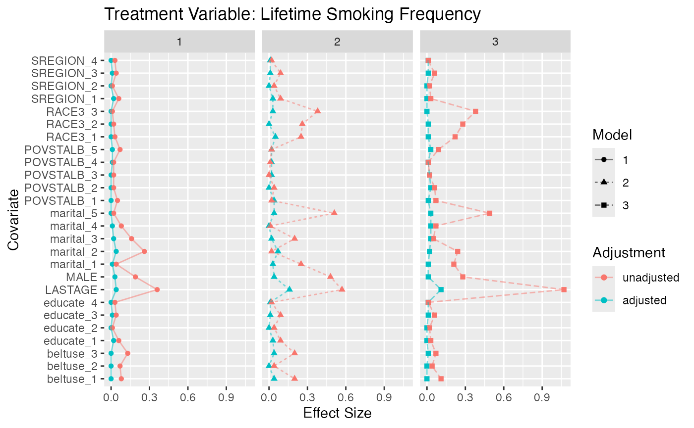
Multiple Covariate Balance Plots for NMES
Phase II: Estimating Effects of Smoking on Medical Expenditures
For both treatment regimes we used the maximumTreat
method for finding matched triplets that will retain each treatment unit
once with the possibility of using treatment units twice in cases where
a treatment unit would not otherwise be matched. The Friedman Rank Sum
Test and repeated measures ANOVA indicate there a statistically
significant difference in both treatment regimes. Figure
@ref(fig:nmesboxplots) provides box plots of the differences for the two
treatment regimes. For the current smoking status treatment, the results
indicate that smoker’s actually spend less than former and non-smokers.
However, as (Imai and Dyk 2004) explain,
the sample of smokers includes only survivors and should be considered
when interpreting these results.
Imai and van Dyk’s analysis used pack year as treatment indicator. Our dichotomizing of pack year into moderate and heavy smokers more closely adheres to their approach. The results with this treatment regime indicate that smokers, both moderate and heavy, have higher medical expenditures than non-smokers. However, there is no statistically significant difference between heavy and moderate smokers in medical expenditures.
boxdiff.plot(tmatch.smoke, nmes$LogTotalExp, ordering=c("Smoker","Former","Never")) +
ggtitle("Treatment Variable: Current Smoking Status")
boxdiff.plot(tmatch.packyears, nmes$LogTotalExp, ordering=c("Heavy","Moderate","Never")) +
ggtitle("Treatment Variable: Lifetime Smoking Frequency")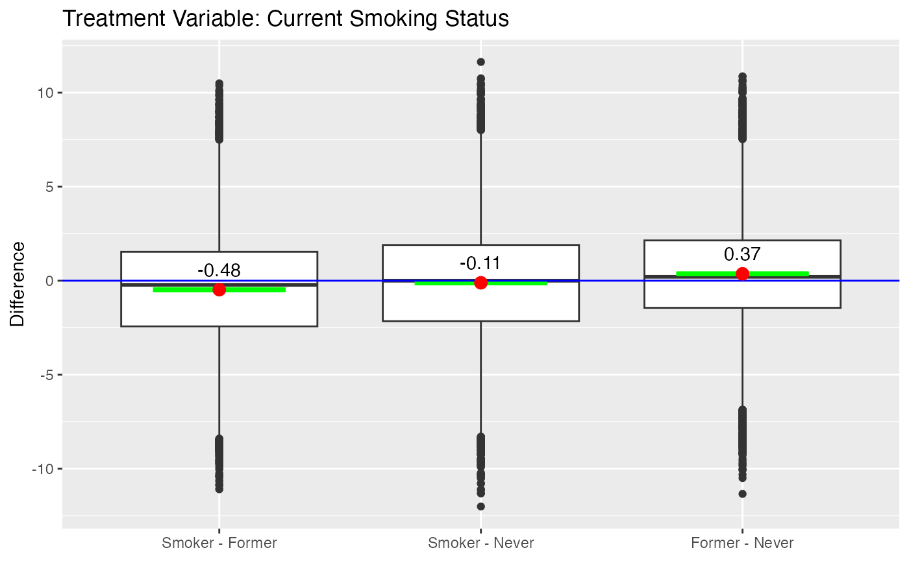
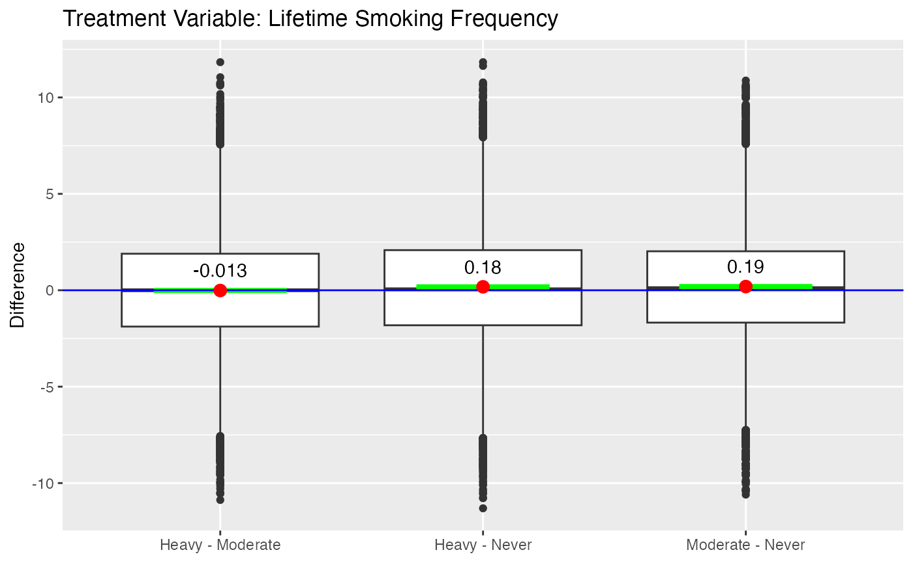
Boxplot of Differences for NMES
References
We utilize the
geom_smoothgeometry in theggplot2package that provides other smoothing functions including linear modeling (lm), generalized linear modeling (glm), and robust generalized additive models (gam). See the documentation for thestat_smoothfunction inggplot2.↩︎This example is included as a demo in the package. Type
demo(nmes)in R to start the demo.↩︎Note that the control group in both instances are people who never smoked and is omitted from this figure.↩︎